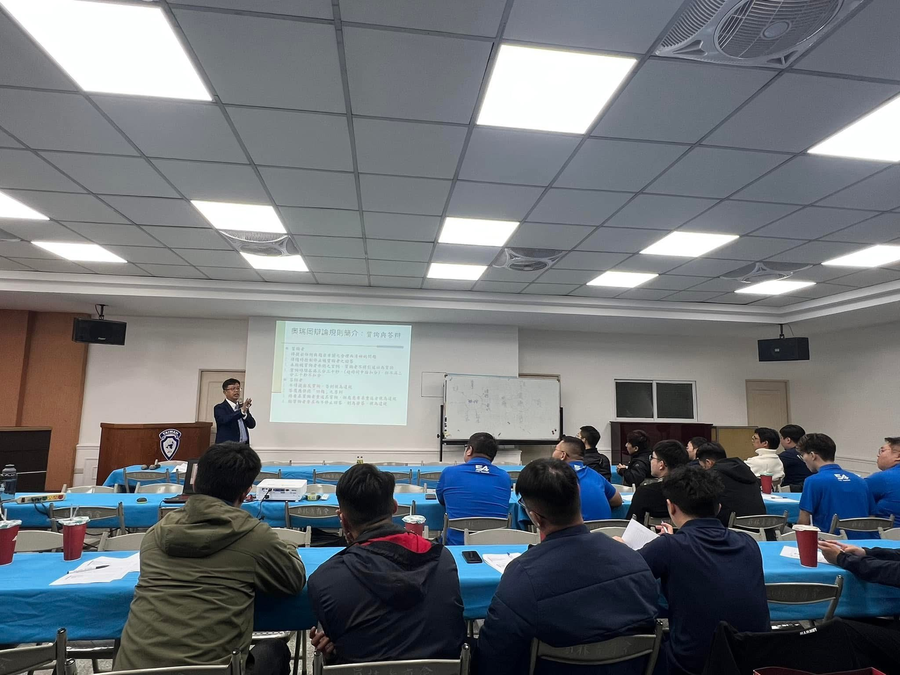
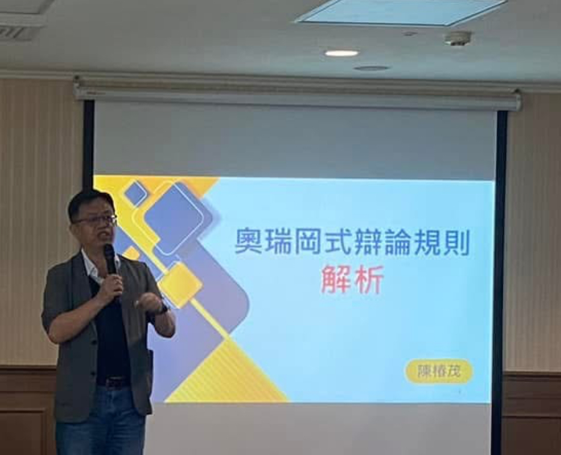
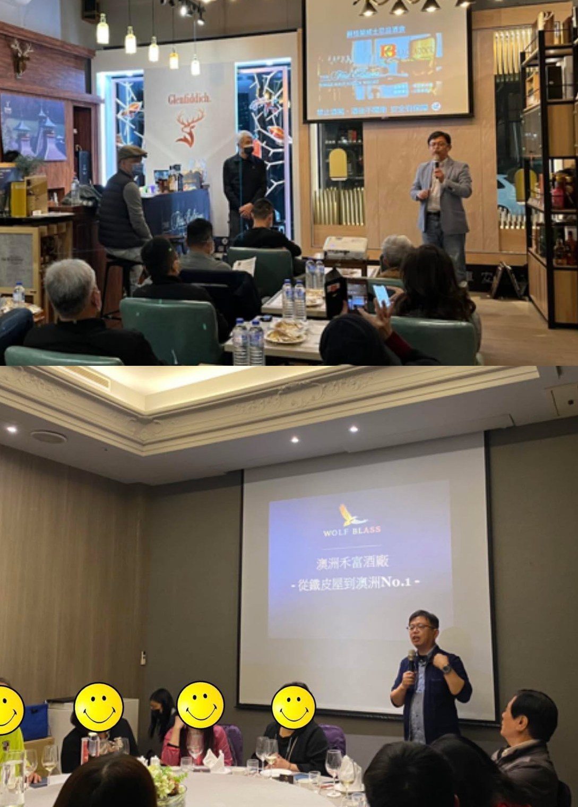
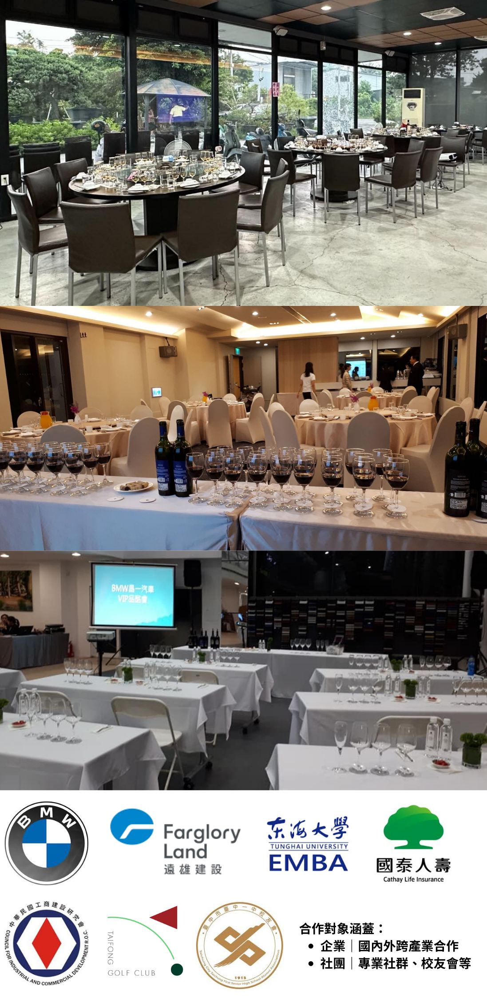
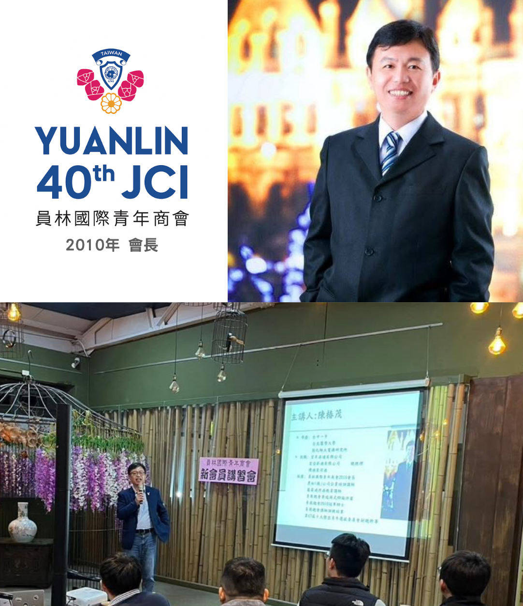
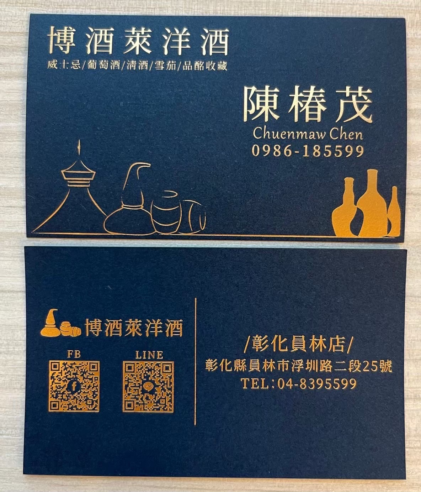

陳椿茂
Tam Chen
博酒萊洋酒 酒類專賣店 總經理
黑松飲料經銷商 經理
奧瑞岡辯論訓練講師＆評審
酒類顧問＆品酒會講師
社團訓練講師
📞 09-86185599
✉️ heysong0301@gmail.com
Line: heysong0301


博酒萊洋酒 總經理
酒類專賣店
🏠 彰化縣員林市浮圳路二段25號
服務0距離 全台服務
專售世界各級威士忌、葡萄酒＆級數酒、香檳＆氣泡酒、日本清酒、高粱酒、進口啤酒等酒類，無酒精啤酒葡萄酒＆軟性飲料，另售雪茄、香菸。


奧瑞岡辯論 評審 & 訓練講師
擔任比賽評審
培養青年思辨與表達能力
促進跨文化交流

酒類顧問及品酒會講師
傳遞品酒文化推廣者
主持威士忌、葡萄酒、烈酒品飲活動
分享酒類文化與品飲技巧
交流互動與教育推廣

客製化品酒會
傳遞品酒文化推廣者
舉辦威士忌、葡萄酒、烈酒等品酩活動
分享酒類文化與品飲技巧
博酒萊洋酒門市定期舉辦品酒會，歡迎報名參加
或客製化專屬品酒會，歡迎合作邀約

員林國際青年商會 2010會長&現任會員
員林錦龍獅子會 現任理監事
全仁慈善會 現任會員
奉獻社會，共創美好
國際青年商會十大傑出青年選拔 副總幹事員林國際青年商會 2010會長&現任會員
員林錦龍獅子會 現任理監事
全仁慈善會 現任會員
